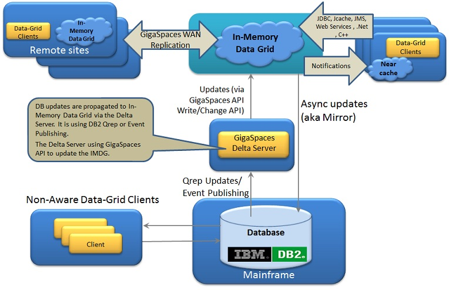
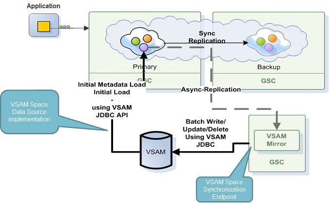
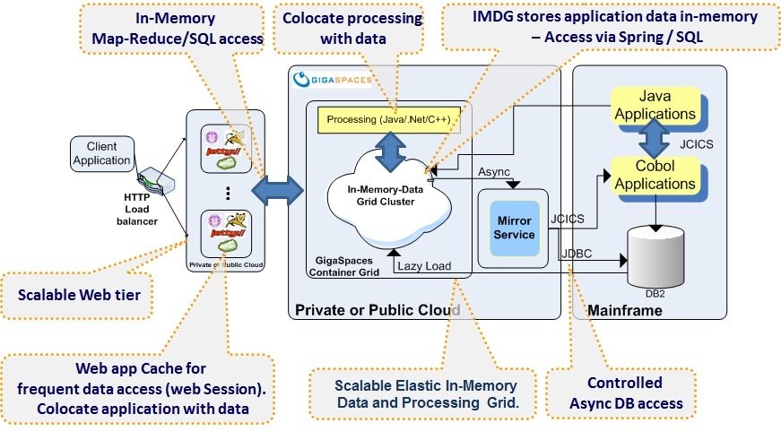

| Author | Product Version | Reference | Download |
|---|---|---|---|
| Shay Hassidim | 9.0 |
Mainframe (Z/OS) based systems running COBOL programs , DB2 or VSAM are legacy systems in many organizations. These are planned to be replaced with low cost commodity servers running Java or .Net based systems, saving the cost of the expensive mainframe MIPS and COBOL-based development.
GigaSpaces can simplify the migration effort from mainframe based systems and reduce the cost of the legacy applications. In addition, having GigaSpaces act as a front-end layer for mainframe based systems may boost the system performance and improve the overall system response time on peak load.
GigaSpaces' ability to deploy, manage and scale services along with the data (that can be partitioned and replicated across multiple commodity machines or remote data centers) will enable your mainframe applications to access GigaSpaces In-Memory Data Grid (IMDG) with minimal re-factoring of the existing applications code , without having to introduce additional third party products, dramatically reducing implementation times and minimizing incremental costs in software licenses and hardware.
There are various architectural options moving Data From Mainframe (Z/OS) DB2 to GigaSpaces IMDG:
IBM® InfoSphere® Data Replication (aka IBM QRep) replicates information between heterogeneous data stores in near real time. It provides replication with transactional integrity to support database migration, application consolidation, warehousing, master data management, business analytics and data quality processes. DB2 Replication programs read the source database recovery logs continuously and apply them to target data source (i.e. databases). This can be achieved via either SQL Replication or Queue Replication.
DB2 Event publishing programs read source database changes from the database logs and makes the same available to consuming applications(in delimited, XML format or direct to database tables). When publishing messages, these can be available via IBM Websphere MQ.

One of the main differences between SQL/Q Replication is the usage of staging tables by SQL replication. Both do use the Q Capture and Q Apply programs, however Q replication has a step wherein the committed changes are immediately sent over to a Websphere Message Q.
Event publishing, on the other hand, does not use the Q Apply program, in other words, it just makes the data available for consumers to handle the same accordingly.
Overall, an architectural decision needs to be made based on the specific use case for each enterprise. There are, of course, latency trade offs with each architectural path chosen. Care has to be taken to define the appropriate choice for a high TPS, OLTP application vs an analytic use case/OLAP etc.
With the architecture described above any updates conducted directly against DB2 database on the Mainframe are propagated in real-time to the In-Memory Data-Grid via the Delta Server. These can be processed at the Delta Server level or at the In-Memory Data-Grid level using a normalized structure, flattened or object hierarchy model that is more natural for the application consumption. From there, this data can be delivered to remote In-Memory Data-Grid located in other geographies (via GigaSpaces Multi-Site-Data-Replication), Client side Cache or consumed proactively using the regular GigaSpaces API.
Running Demo For a running demo of the Delta Server architecture publishing changes from DB2 to IMDG see DB2 Delta Server section.
References:
GigaSpaces provides an extremely flexible persistence layer (known as the Space Data Source and Mirror Service) that enables transparent communication between the GigaSpaces IMDG and virtually any type of back-end application or database system.
When used with a database, the Mirror service is one of the primary reasons allowing GigaSpaces to overcome database locking issues experienced on peak load periods. The Mirror service offloads the database write access, since the IMDG operates as the primary interface to the application data access while handling persistence using write behind with a durable ordered activity, delegating in-memory transactions to the database running on the mainframe. The Space Data Source allows the
Any access to the data done primarily from the IMDG using one of the standard interfaces GigaSpaces supports (POJO/Spring, JPA, JDBC, Key/value, .Net , C++ or Document APIs). If the desired data item cannot be found within the IMDG, it will be accessed through the database running on the mainframe, retrieving the relevant data item, loading it into the IMDG to be reused for subsequent transactions and passing it back to the client application. This approach saves the need for accessing the mainframe on every application data access by using an in-memory layer fabric that may scale on demand running on relatively inexpensive hardware.
GigaSpaces Mirror service has a central coordinator for all back-end store updates, enabling your system to batch data updates and persist in-memory distributed transactions via a continuous background access to the mainframe where the access frequency to the mainframe is controlled and pre-configured. This allows the system to minimize the number of mainframe connections and interactions reducing MIPS consumption while controlling the data consistency level and synchronization between the in-memory representation of the data and its representation on the mainframe.
Many mainframe-based applications that perform nightly batch jobs drive a large number of data updates being made to back-end stores. In this context, GigaSpaces' inherent ability to maintain transactional integrity is critical. In-Memory transactions can be fully committed preserved in multiple different physical locations using GigaSpaces' high-availability and data replication over the WAN mechanism, and ultimately persisted to the database with zero risk of the mainframe and GigaSpaces being out of sync for a long duration.
Other data grid solutions require a tremendous amount of custom code or integration with a third party transaction manager to address these requirements, increasing development time, on-going management of custom code and generates greater level of risk for inconsistent data.
The persistency layer within GigaSpaces has a rich and flexible interface you can leverage. This allows
The data flow from the IMDG to the legacy systems has a unique and special behavior with GigaSpaces. It provides one central coordinator (Mirror) that receives transactions from all partitions and allows the users to aggregate operations belong to the same IMDG transaction before it goes back to the legacy backend mainframe system.
Without a coordinator, you might end up pushing different pieces of the distributed transaction data belong to the same transaction from different partitions into the legacy system in different times. In case of a failure with the IMDG nodes or the database, you could end up with inconsistency within the legacy system.
Another aspect of the central coordinator is its ability to save MIPS. Since it allows you to condense operations from different partitions into one bulk operation, you may push more data in one batch to the database on the mainframe. As much as the IMDG is larger and include more partitions the savings with MIPS is higher. This makes sure the MIPS usage will not be a function of the number of nodes.
Summary: the mirror service serves as a coordinator that provides not only access to the persistence lifecycle, but provides consistency and safety for your application as well.
The ability to deploy web services acting as gateways to the data/business logic hosted within GigaSpaces is important. This functionality allows every new component or legacy component to interact with the system. The GigaSpaces container may run a set of web services, and can scale these dynamically.
These may be the backbone of the entire system to access backend data and services. The web layer can have its own cache running within the web application. This speeds up access to reused data by having it as part of the application memory address avoiding the need to perform remote access to the IMDG.
GigaSpace's
The GigaSpaces External Data Source allows the
The following architecture leverage VSAM JDBC API to allow

References:
JCICS (provided by CICS) is the Java equivalent of the EXEC CICS application programming interface (API) that you would use with other CICS supported languages, such as COBOL. It allows you to access CICS resources and integrate your Java programs with programs written in other languages. Most of the functions of the EXEC CICS API are supported. For a description of the JCICS API, see The JCICS class library. You may leverage JCICS to allow Java application and native (COBOL) programs running on the mainframe. You may use GigaSpaces IMDG notifications and update the mainframe applications with every change within the IMDG in a transparent manner.

References:
Allows the application to pull data from the Mainframe via their public interfaces in an explicit manner. In this case we can host the web services and scale them.
Connect into a known messaging broker (IBM MQ) within the existing system, consume messages and push them into the IMDG to be leveraged by whoever using the IMDG as its data source.
Leverage MF Mule integration and GigaSpaces Mule support to have these to communicate with each other.
WebMethods EntireX Java/.Net API provides bi-directional service wrapping for a unique range of mainframe environments.